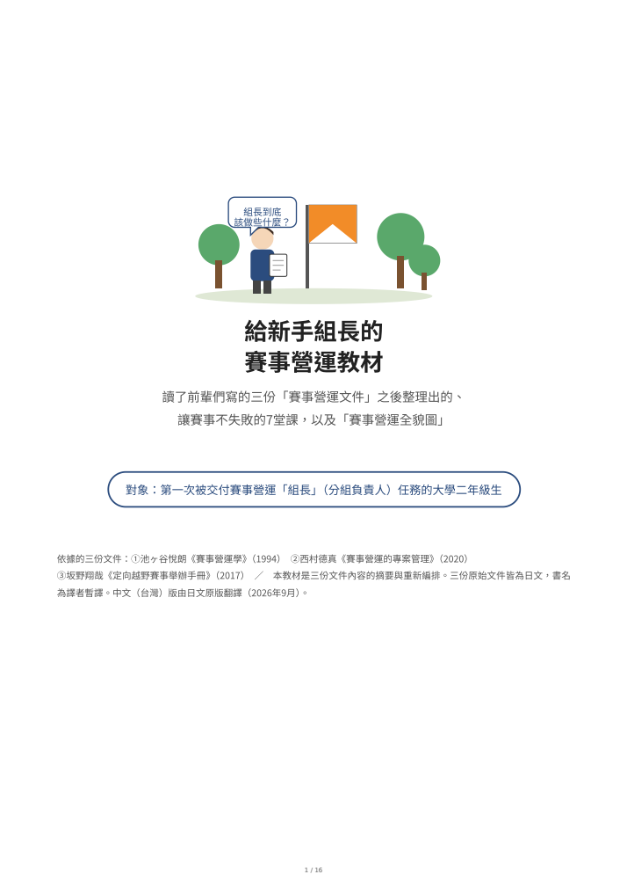

中文（台灣）版 ／ 日本語版はこちら
思考賽事營運──三份文件的比較閱讀
關於定向越野的賽事營運，有三份在不同年代、由不同立場的三個人寫下的文件：1994年的《賽事營運學》（池ヶ谷悅朗）、2020年的《賽事營運的專案管理》（西村德真）、2017年的《定向越野賽事舉辦手冊》（坂野翔哉）。把這三份放在一起讀，會發現寫法和守備範圍完全不同，但關於賽事營運「不會變的部分」，卻說著驚人相似的話。這裡放的是把比較閱讀的結果整理而成的兩份文件的中文（台灣）版。第一次被交付組長任務的人，請先從上面的教材開始。

給新手組長的賽事營運教材
讀了三份文件之後整理出的、讓賽事不失敗的7堂課，以及「賽事營運全貌圖」
寫給第一次被交付賽事營運「組長」（分組負責人）任務的大學二年級生，把下面的比較報告改寫得淺顯易懂、附有插圖的教材。收錄7堂課與「如果你是組長，就這麼做」的具體行動、三份文件的使用速查表、沿著階段的一年流程、檢查清單，以及用語小辭典。
開啟PDF（A4・16頁）定向越野賽事營運論 三份文件比較
共通點，以及各自的特色與獨到之處
論述三份文件的來歷、九個共通點（取決於籌備、公布的資訊不更改、責任唯一、設計部門間的接點、定期檢查進度與品質、記錄並交接、執行委員長高舉理念、在地與對外協調、工程的思考方式）、各自的拿手絕活、依觀點的對照表，以及合起來讀所看到的事的報告。也觸及與《人月神話》意想不到的關聯。
開啟PDF（A4・9頁）依據的三份文件（皆為日文）
- 池ヶ谷悅朗《賽事營運學──舉辦並培育賽事之道》《O-Japan》1994年7月號〜1995年4月號連載 本網站刊有全文（日文）（第4部未公開）。
- 西村德真《賽事營運的專案管理》2020年度京都府定向越野協會終身運動指導者研習會資料（日文） nishipro.com
- 坂野翔哉《舉辦判斷・事前準備・當日營運 定向越野賽事舉辦手冊》坂野山遊地圖企畫，2017年初版・2018年修訂（日文。截至2026年9月10日於此處公開；惟該orienteering.com伺服器已確定於2026年9月底前停止運作）
《定向越野賽事舉辦手冊》的引用與摘要已獲作者坂野翔哉先生同意（2026年9月）。兩份文件由AI（Fable 5.1）生成，中文（台灣）版亦由AI自日文原版翻譯；三份原始文件的書名為暫譯。如有錯誤或建議，歡迎告知。